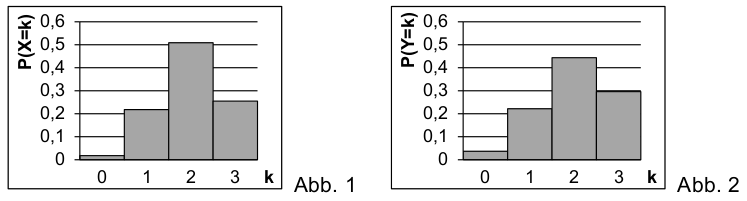

Expected value of election process¶
Problem
After the election, party A may fill three seats in a committee. Out of the eight female and four male city councillors, who were interested in a seat in this comittee, three people are determined to be members of the committee by lot.
The random variable \(X\) describes the number of female members of the committee of party A. Figure 1 depicts the probability distribution of the random variable \(X\) with \(P(X=0) = \frac{1}{55}\) and \(P(X=3) = \frac{14}{55}\).
Compute the probability \(P(X=1)\) and \(P(X=2)\).
(Result: \(P(X=1)=\frac{12}{55}, P(X=2)=\frac{28}{55}\))
Determine the expected value and the variance of the random variable \(X\).
(Result: \(E(X)=2, \mathrm{Var}(X)=\frac{6}{11}\))
Figure 2 shows the probability distribution of the binomially distributed random variable \(Y\) with the parameters \(n=3\) and \(p=\frac{2}{3}\). Show by calculation that \(Y\) has the same expected value as the random variable \(X\) but has a bigger variance than \(X\). Explain how one can see by comparison of figures 1 and 2 that \(\mathrm{Var}(Y)>\mathrm{Var}(X)\) holds.
Solution of part a
The drawing of lots corresponds to drawing from an urn without replacement. This yields a hypergeometric distribution. With the number of female (\(f=8\)) and male city councillors (\(m=4\)) one obtains for \(N=3\) members of the committee
For \(X=1\) one finds
Since the sum of probabilities has to equal one, it follows that
The probabilities can also be easily determined with the help of Sage.
Solution of part b
Generally, the expected value of the distribution can be computed with the formula
The variance is then given by
with
With the probabilities from the first part of the problem, one obtains
and hence
With Sage, we can determine these results easily as well.
Solution of part c
For the given binomial probability distribution
we can determine the expected value as well as the variance with the help of Sage.
Of cource, one can obtain these results by explicit calculations along the lines of the previous part of the problem if one determines the probabilities first.
Comparing the results with part b, one sees that the expected value is equal but the variance is bigger.
This can already be concluded by means of the figures because the probability for \(Y\) at \(k=2\) is smaller, while at \(k=0\) and \(k=3\) it is clearly bigger than for \(X\). Hence, the probability distribution for \(Y\) is “broader” and has a bigger variance.